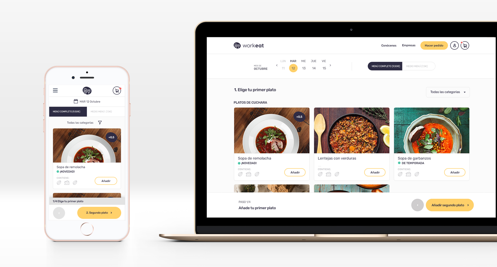
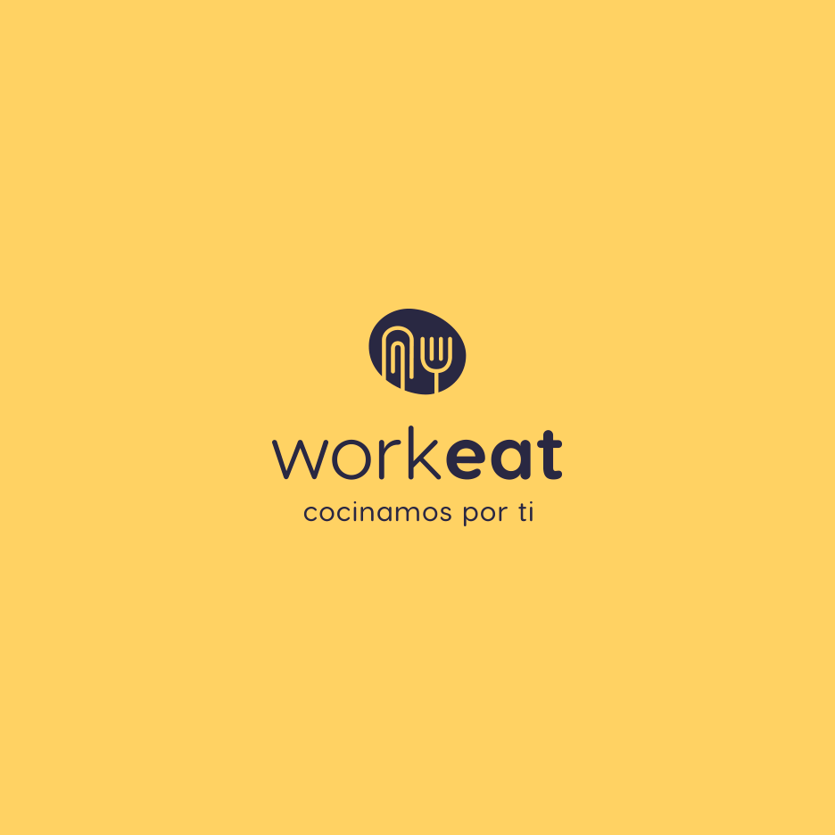
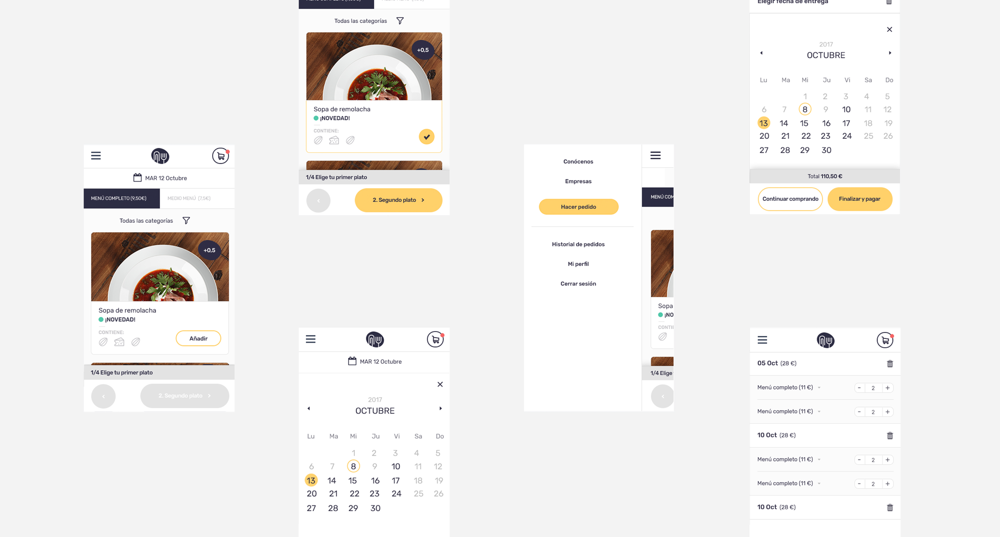

Workeat
Se presenta un reto, dar forma a la identidad visual y a un aplataforma digital de una nueva empresa que busca posicionarse como la mejor alternativa para aquellas personas que deseen consumir comida saludable, casera y tradicional en su oficina.
- Tareas:
- UI
- BRAND
- Trabajando en:
- MONOBO




